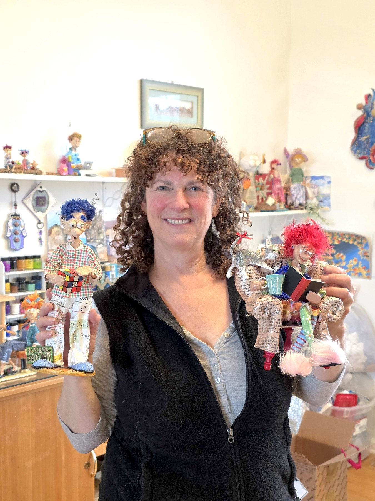
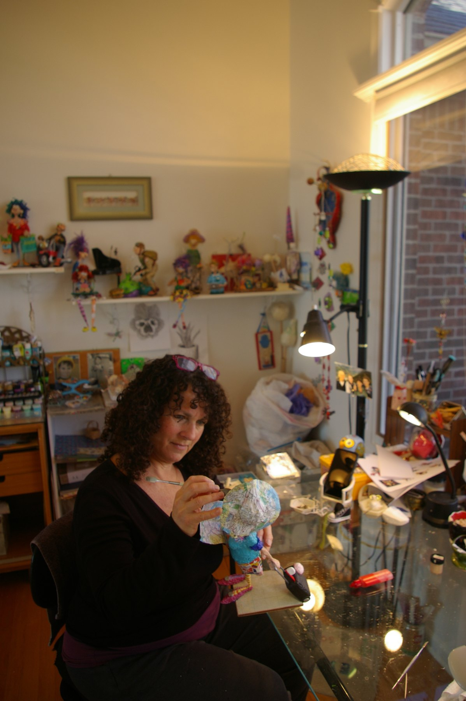

About Naava

My name is Naava Naslavsky, and I have two concomitant passions that together make me whole and happy: science & art. In my “real life” I am a scientist, a cell biologist, conducting biomedical research at the University of Nebraska Medical Center in Omaha, NE.
I work with paper mâché out of my humble ‘home-studio’, a former dining room which I have transformed into my small creativity-domain. My sculptures are ALL funny, whimsical and full of humor. I love the combination of humor and art — they make such a nice ‘duo’ that brings a smile to almost everyone!
In the process of making my paper-mâché sculptures, I recycle materials and objects, re-purposing them into new shapes that completely differ from their original look and use. For example, the pipettes that I routinely use in the lab are transformed into the long legs of some of my whimsical sculptures, and the scientific articles (‘papers’) that I read and write are shredded and become my raw material.
Paper-mâché is the “master acrobat” when it comes to versatility of media: it is free and wild, and on top of that — can acquire vibrant colors… so isn’t it THE classical media to create humorous sculptures?
- Born & raisedon a kibbutz in northern Israel
- Creating since2010, in paper mâché
- Award2012 People’s Choice Best Artist, Art & Soup, Omaha
- Day jobCell biologist, University of Nebraska Medical Center

Where to find my work
- Galleria GreendaleGreendale, WI
- Artisans in the LoopSt. Louis, MO
- Bluestem Missouri CraftsColumbia, MO
- Artisans Collective STLSt. Louis, MO
Previously shown at
Blue Pomegranate (Omaha, NE) · Sweetheart Gallery (Woodstock, NY) · Pennello (Cleveland, OH) · From Our Hands (Des Moines, IA) · The Blue Door (Springfield, IL) · Morning Glory (Milwaukee, WI)